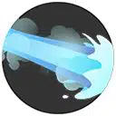
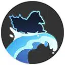
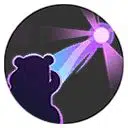

| Attaque | Icône | Description |
|---|---|---|
| Attaque de base |  |
La troisième Attaque de base inflige des dégâts en zone et ralentit les ennemis touchés. |
| Talent | Icône | Description |
|---|---|---|
| Bênet | Quand l’utilisateur reçoit des dégâts, la perte de PV est graduelle. Lorsqu’il inflige des dégâts, il regagne une partie des PV graduels perdus et réduit la Défense Spéciale de l’ennemi touché. |
| Attaque spéciale 1 | ||
|---|---|---|
| Attaque | Icône | Description |
| Pistolet à O | Canalise puis projette un jet d’eau qui inflige des dégâts et ralentit l’ennemi touché. Plus la capacité est canalisée longtemps, plus la portée, les dégâts et le ralentissement augmentent. |
|
| Attaque | Icône | Description |
|---|---|---|
| Niveau 4: Ebullition Amélioration au niveau 11 |
 | Projette un puissant jet d’eau qui inflige des dégâts et ralentit les ennemis touchés. |
| Attaque | Icône | Description |
|---|---|---|
| Niveau 4: Surf Amélioration au niveau 11 |
 | Charge vers l’avant sur une énorme vague. Les ennemis touchés subissent des dégâts, sont projetés dans les airs et ralentis. |
| Attaque spéciale 2 | ||
|---|---|---|
| Attaque | Icône | Description |
| Paresse | L’utilisateur s’allonge et regagne continuellement des PV. Les dégâts subis sont réduits pendant l’utilisation. |
|
| Attaque | Icône | Description |
|---|---|---|
| Niveau 6: Amnésie Amélioration au niveau 13 |
L’utilisateur regagne les PV graduels qu’il a perdu. Il est temporairement immunisé aux effets de contrôle et augmente les dégâts de son prochain Surf ou Ébullition. |
| Attaque | Icône | Description |
|---|---|---|
| Niveau 6: Levikinésie Amélioration au niveau 13 |
 | Saisit un Pokémon ennemi par la pensée et le fait flotter dans les airs. Si la capacité est réutilisée, l’ennemi est attiré vers l’utilisateur. |
| Capacité Unite | ||
|---|---|---|
| Attaque | Icône | Description |
| Flagadapsyko Débloquage au niveau 9 |
Canalise un puissant rayon psychique. L’ennemi touché est immobilisé et reçoit des dégâts pendant toute la canalisation. Pendant l’utilisation, l’utilisateur profite d’un bouclier et est immunisé aux effets de contrôle. |
|